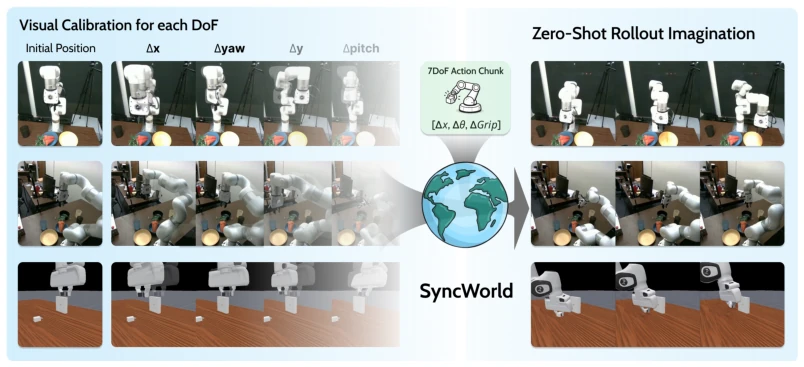
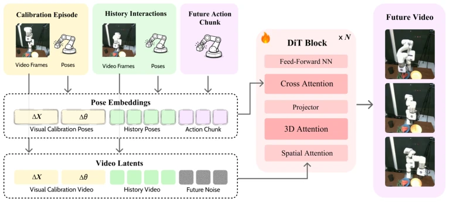
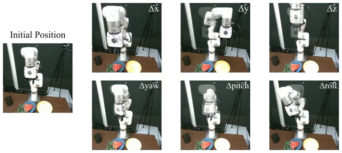
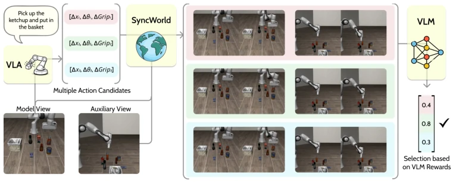
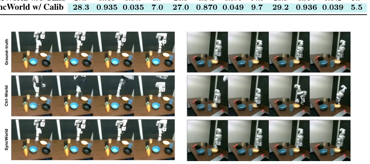

The name 'SyncWorld' is quite fitting, after all, robots fear 'desynchronization' the most. The core logic of this paper is actually quite straightforward and blunt: since numerical actions perform differently across different cameras and robotic arms, feed the model a 'calibration video' to tell it 'under this viewpoint, pushing the stick goes left'. Although 'zero-shot' sounds appealing, the premise is that you must first have that calibration clip, otherwise you still have to make do with distilled historical experience. Compared to models [1] that attempt to solve everything with implicit actions, SyncWorld chooses to face the chaos of pixel space directly, forcibly aligning action semantics with visual evidence. However, relying on VLM for policy evaluation [46] is also somewhat esoteric; if the evaluation model misjudges, even the best simulation is useless. Overall, this is a pragmatic solution that finds a balance between 'controllability' and 'generalization'. Although it does not solve all problems, at least it makes world models less prone to malfunction in new scenes without training.
World models for embodied intelligence have always had a fatal flaw: actions are not a universal language in pixel space. The same numerical instruction, with a different camera angle or robotic arm model, changes the motion trajectory in the image. Existing methods such as Ctrl-World [23] or IRASim [76] suffer generalization collapse during mixed training data due to such setup-dependent mapping conflicts. Mixed data forces the model to fit multiple mutually exclusive action-visual mappings, failing when encountering new environments during testing. Although some works attempt to solve this using implicit actions [1] or geometric estimation [69], they are either non-executable or require additional parameter updates. SyncWorld attempts to resolve this fundamental contradiction: without retraining, enabling the model to learn to understand actions based on the current visual context, avoiding maladaptation on heterogeneous data sources.

Figure 1: SyncWorld allows for zero-shot simulation across previously unseen camera angles and embodiments through in-context visual calibration. By conditioning on a brief interaction episode that demonstrates all six motion DoFs (left), the model resolves setup-specific Action-Visual Mappings and can anticipate accurate future rollouts (right) in novel environments without additional training.
SyncWorld is based on the DiT architecture, with the core being the introduction of visual calibration context $C_s$ to dynamically define action-visual mapping. The pipeline is divided into training and inference stages. During training, calibration fragments are injected from multi-source trajectories, containing directional actions across all 6 degrees of freedom, forming compact visual evidence. To prevent the model from rote memorizing coordinate conventions, the authors employed action coordinate augmentation (flipping/permuting axes), forcing the model to infer semantics from vision. Additionally, through Calibration Distillation, the model can utilize historical interactions $H_t$ to approximate mapping even without calibration input, enabling flexible inference. During inference, the model receives history, future actions, and optional calibration fragments to generate future videos. If used for policy improvement, it combines with GPC-Rank [46], using VLM scoring of imagined rollouts to filter actions. The entire process requires no test-time fine-tuning, relying solely on context to adapt to new setups. This design enables the model to utilize explicit calibration for strong control, and also rely on implicit historical adaptation when calibration data is lacking, resolving the supervision conflict problem during heterogeneous data training and achieving true zero-shot simulation capability.

Figure 2: SyncWorld Architecture. SyncWorld is an action-conditioned world model that employs a Diffusion Transformer (DiT) backbone to predict future video frames. The architecture incorporates a visual calibration episode and interaction history to clarify setup-specific Action-Visual Mappings. These inputs are encoded as pose embeddings and video latents, which enable the DiT to generate temporally and spatially consistent future frames.

Figure 3: Calibration Episode. To resolve the setup-specific Action-Visual Mapping, we collect a brief interaction sequence where the robot performs directional motions across each DoF. We do not include gripper openness as the visual consequence is trivial. Each segment has a single control dimension, offering visual evidence of how numerical actions translate into pixel-space motion in the current camera view.
Experiments cover simulation (RLBench, RoboCasa, ManiSkill, LIBERO) and real-world (DROID, xArm). Baselines include IRASim [76], WorldGym [47], Ctrl-World [23]. Metrics involve video quality (PSNR, FID) and multi-view consistency (Met3r [2]). Results show SyncWorld significantly outperforms baselines in unseen scenes, with significant video quality improvement, and Met3r scores close to the true upper bound. Policy improvement experiments indicate that utilizing SyncWorld for zero-shot test-time search can improve LIBERO task success rates, approaching the Oracle upper bound. Ablation studies confirm that removing calibration training or distillation both lead to performance degradation, proving both are crucial for cross-domain generalization.

Figure 4: Zero-shot Policy Improvement via SyncWorld. Given a natural language instruction and current observations, a VLA policy generates multiple different candidate action chunks. SyncWorld predicts future visual outcomes for each candidate from multiple viewpoints to ensure spatial consis- tency. A VLM serves as an outcome evaluator, assigning scores to the imagined rollouts according to the original instruction. The action candidate with the highest reward is selected for execution, enabling test-time policy improvement in novel environments without additional training.

Figure 5: Qualitative Results. We evaluate the performance of SyncWorld on a real-world setup with an unseen robot embodiment and novel camera viewpoints. Compared to the Ctrl-World baseline, which fails to accurately ground numerical actions in this new pixel space, SyncWorld produces future rollouts that are highly consistent with the Ground-truth observations.